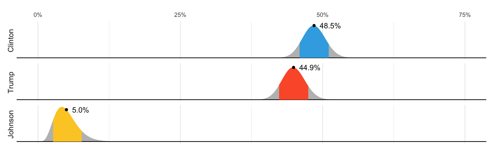

library(dslabs)
polls <- polls_us_election_2016 |>
filter(state == "U.S." & enddate >= "2016-10-31" &
(grade %in% c("A+","A","A-","B+") | is.na(grade))) |>
mutate(spread = rawpoll_clinton/100 - rawpoll_trump/100)
one_poll_per_pollster <- polls |> group_by(pollster) |>
filter(enddate == max(enddate)) |>
ungroup()
results <- one_poll_per_pollster |>
summarize(avg = mean(spread),
se = sd(spread) / sqrt(length(spread))) |>
mutate(start = avg - 1.96 * se,
end = avg + 1.96 * se) Bayesian Models
2026-10-21
Bayesian statistics
In 2016 FiveThirtyEight showed this diagram:

The colored areas represent values with an 80% chance of including the actual result, according to the FiveThirtyEight model.
Bayesian statistics
What does this mean in the context of the theory we have discussed?
The statement “Obama has a 90% chance of winning the election” is equivalent to “the probability \(p>0.5\) is 90%” for our urn challenge.
However, the urn model \(p\) is a fixed parameter so it does not make sense to talk about probability.
With Bayesian statistics, we assume \(p\) is random variable, and thus, a statement such as “90% chance of winning” is consistent with the mathematical approach.
Bayesian statistics
Forecasters also use models to describe variability at different levels.
- sampling variability
- pollster to pollster variability
- day to day variability
- election to election variability.
One of the most successful approaches used for this are hierarchical models, which can be explained in the context of Bayesian statistics.
Note
For an in-depth treatment of this topic, we recommend one of the following textbooks:
Berger JO (1985). Statistical Decision Theory and Bayesian Analysis, 2nd edition. pringer-Verlag.
Lee PM (1989). Bayesian Statistics: An Introduction. Oxford.
Bayes theorem
_ As a case study: we ill explain the math behind the 538 diagram we started with.
- We start by describing Bayes theorem, using a hypothetical cystic fibrosis test as an example.
Bayes theorem
- Suppose a test for cystic fibrosis has an accuracy of 99%.
\[ \mbox{Pr}(+ \mid D=1)=0.99, \mbox{Pr}(- \mid D=0)=0.99 \]
- \(+\) means a positive test and \(D = 1\) if you actually have the disease, \(D=0\) if not.
Bayes theorem
Imagine we select a random person and they test positive.
What is the probability that they have the disease?
We write this as
\[ \mbox{Pr}(D=1 \mid +) \]
- The cystic fibrosis rate is 1 in 3,900, which implies that \(\mbox{Pr}(D=1) \approx 0.00025\).
Bayes theorem
- To answer this question, we will use Bayes theorem, which in general tells us that:
\[ \mbox{Pr}(A \mid B) = \frac{\mbox{Pr}(B \mid A)\mbox{Pr}(A)}{\mbox{Pr}(B)} \]
Bayes theorem
- This equation, when applied to our problem, becomes:
\[ \begin{aligned} \mbox{Pr}(D=1 \mid +) & = \frac{ P(+ \mid D=1) \cdot P(D=1)} {\mbox{Pr}(+)} \\ & = \frac{\mbox{Pr}(+ \mid D=1)\cdot P(D=1)} {\mbox{Pr}(+ \mid D=1) \cdot P(D=1) + \mbox{Pr}(+ \mid D=0) \mbox{Pr}( D=0)} \end{aligned} \]
Bayes theorem
- Plugging in the numbers, we get:
\[ \frac{0.99 \cdot 0.00025}{0.99 \cdot 0.00025 + 0.01 \cdot (.99975)} = 0.02 \]
According to the above, despite the test having 0.99 accuracy, the probability of having the disease given a positive test is only 0.02.
This might seem counter-intuitive, but it is because we must factor in the very rare probability that a randomly chosen person has the disease.
Bayes theorem

Priors and posteriors
In the previous lecture, we computed an estimate and margin of error for the difference in popular votes between Hillary Clinton and Donald Trump.
We denoted the parameter, the the difference in popular votes, with \(\mu\).
The estimate was between 2 and 3 percent, and the confidence interval did not include 0.
A forecaster would use this to predict Hillary Clinton would win the popular vote.
Priors and posteriors
But to make a probabilistic statement about winning the election, we need to use a Bayesian approach.
We start by quantifying our knowledge before seeing any data.
This is done using a probability distribution referred to as a prior.
Priors and posteriors
- For our example, we could write:
\[ \mu \sim N(\theta, \tau) \]
We can think of \(\theta\) as our best guess for the popular vote difference had we not seen any polling data.
We can think of \(\tau\) as quantifying how certain we feel about this guess.
Priors and posteriors
Generally, if we have expert knowledge related to \(\mu\), we can try to quantify it with the prior distribution.
In the case of election polls, experts use fundamentals, for example, the state of the economy, to develop prior distributions.
The data is used to update our initial guess or prior belief.
This can be done mathematically if we define the distribution for the observed data for any given \(\mu\).
Priors and posteriors
- In our example, we write down a model for the average of our polls:
\[ \bar{X} \mid \mu \sim N(\mu, \sigma/\sqrt{N}) \]
As before, \(\sigma\) describes randomness due to sampling and the pollster effects.
In the Bayesian contexts, this is referred to as the sampling distribution.
Note that we write the conditional \(\bar{X} \mid \mu\) because \(\mu\) is now considered a random variable.
Priors and posteriors
We can now use calculus and a version of Bayes’ Theorem to derive the distribution of \(\mu\) conditional of the data, referred to as the posterior distribution.
Specifically, we can show the \(\mu \mid \bar{X}\) follows a normal distribution with expected value:
\[ \begin{aligned} \mbox{E}(\mu \mid \bar{X}) &= B \theta + (1-B) \bar{X}\\ &= \theta + (1-B)(\bar{X}-\theta)\\ \mbox{with } B &= \frac{\sigma^2/N}{\sigma^2/N+\tau^2} \mbox{ and } \mbox{SE}(\mu \mid \bar{X})^2 = \frac{1}{1/\sigma^2+1/\tau^2} \end{aligned} \]
Priors and posteriors
The expected value is a weighted average of our prior guess \(\theta\) and the observed data \(\bar{X}\).
The weight depends on how certain we are about our prior belief, quantified by \(\tau\), and the precision \(\sigma/N\) of the summary of our observed data.
This weighted average is sometimes referred to as shrinking because it shrinks estimates towards a prior value.
Priors and posteriors
These quantities are useful for updating our beliefs.
Specifically, we use the posterior distribution not only to compute the expected value of \(\mu\) given the observed data, but also, for any probability \(\alpha\), we can construct intervals centered at our estimate and with \(\alpha\) chance of occurring.
Example
We will use these data again:
Example
To compute a posterior distribution and construct a credible interval, we define a prior distribution with mean 0% and standard error 3.5%, which can be interpreted as follows: before seeing polling data, we don’t think any candidate has the advantage, and a difference of up to 7% either way is possible.
We compute the posterior distribution using the equations above:
Example
Example
- Since we know the posterior distribution is normal, we can construct a credible interval like this:
Example
Furthermore, we can now make the probabilistic statement that we could not make with the frequentists approach by computing the posterior probability of Hillary winning the popular vote.
Specifically, \(\mbox{Pr}(\mu>0 \mid \bar{X})\) can be computed as follows:
Example
According to this calculation, we are 100% sure Clinton will win the popular vote, which seems too overconfident.
It is not in agreement with FiveThirtyEight’s 81.4%.
What explains this difference?
There is a level of uncertainty that we are not yet describing, and for which we will need to learn about hierarchical modesl*.